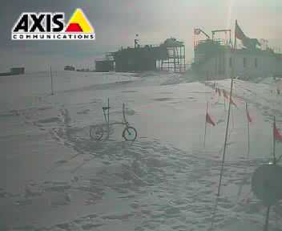

| Page last changed August 3, 2003 |
Due to heavy rains, the snow in the San Joaquin River watershed has been melting faster than usual, filling up reservoirs and flooding many areas of central California. I am on the emergency crew working 12 hour shifts at Friant Dam. This dam is about a mile wide, with three drum gates in the middle that regulate flood water. The drum gates are very simple in design because they use buoyancy to hold back water, thus do not need electricity to run, but the valves must be controlled by hand.
Each hour, it is customary to drive a truck backwards across to the middle of the dam to the block-house above the valves. Imagine doing that in the rain, when its dark, and with a rising reservoir beside you!
On my shift (January 3, 1997), I drove to the side of the dam, took out my Brompton, rode out to the middle, tweaked the valve, and rode back in less time than was customary.
Here is a typical errand/shopping run on my Brompton, which is what I did today. I hopped on Gumby (this is what my kids promptly named my Brompton upon seeing it fold) in my regular shoes & clothes & headed for the store a few miles away, passing someone on a nice Trek road bike, which I thought was a hoot. (with its very upright position the Brompton is not exactly fast) Grabbed a shopping cart, folded my bike, put it in the cart & went in the store. No worries about anyone messing with this bike. Bought a full bag of food, unfolded the bike & clipped on the basket while several women stopped to say nice things. When I was thinking about getting this bike someone wrote that its a babe magnet, I didn't believe him at the time but its true, women are fascinated & excited by this bike! Guys, put a puppy in the basket & women would literally chase you down the road in a frenzy, overcome by the combined cuteness.
Today I hooked up my trailer and had a great ride to the UPS terminal to send off a suitcase order. My [Bykaboose] trailer holds a Brompton box with ample room left over, and it tows beautifully. I made my delivery at UPS and worked my way back through streets of a mixed bayside neighborhood near our house. I came up short at a cul de sac where ten little kids were playing. They loved the Brompton and each one wanted a ride in the trailer. I obliged them all! There was much running along side, laughing and shouting. One boy relaxed by sitting back with his feet in the air while he composed a poem or two. That was a nice time! A trail led out of the cul de sac and I followed it through the bay marshland for some four miles 'til I came to a road that took me home. I've worked up a good apetite!
We are having big floods just now in my neighborhood. My side of the street was ok last night, but at two AM yesterday scores of houses all around me were inundated with mud and water when the creek that runs through our town overflowed. Tonight and over the next two days bigger storms are coming. The City Fathers have provided free sand and sand bags. Today I hauled 51 sand bags at 40 plus pounds each (4-6 at a time) behind my brompton in my Bykaboose trailler. What a great concept is the totally simple Bykaboose from China (not Taiwan). We have stacked the sand bags around our house, and now we hope for the best. If Dave Holiday (Mr. think big and heavy when inovating) had still been here we could have hauled 20 bags at a time! Dave came to see me in California last week and we had coffee and cake and a great time bragging about folding and Bromptons, his consuming passion.
BACKGROUND. I brought my Brompton with me to Australia from the U.K. in 1989, and for just over two years I used it for regular commuting on roads and bike paths, only ever taking it outside Melbourne once, when I rode on a metalled country road between a station and an airshow. I had many different component failures, e.g. broken spokes, brake and gear cables, the folding pedal, and the dynamo fell off. Worst of all, as I had to have replacements flown in from the U.K., the rear wheel sprockets broke repeatedly. On each occasion he sent me new sprockets Andrew Ritchie asserted, usually incorrectly, that these would not fail again. When they were finally of good workmanship they did not fit the chain, so that also needed to be replaced. This attitude told me that Andrew Ritchie was over-optimistic, but I was able to live with these repeated minor failures.
MAIN ACCIDENT. At about 8.20 a.m. on the 29th of January, 1992, while starting into motion at traffic lights, the steering column literally came apart in my hands without warning. I do not mean it came unfastened - the metal split through.
BEHAVIOUR OF LOCAL BROMPTON AGENT. Once I found out who to contact, I left messages on his answerphone. He did not reply to these, but immediately went to see the Brompton at the shop and contacted Andrew Ritchie to set things in motion - but without knowing anything at all about the accident. He guessed - wrongly - that I wanted a replacement part. Actually, I wanted tests done. After all, most Brompton replacements had been defective, and until I knew what caused the failure I didn't want a repair that just created another deathtrap. After the agent started all this he telephoned me, and I asked him to hold off until we could meet and sort details out. Instead, when a replacement part arrived he went into the bicycle shop and countermanded my instructions to hold all work until we knew what to do. Then, and only then, he read the letter I had sent him. When I contacted him next he refused to meet me, and took the view he had been extremely helpful. But it's like the old joke about the four boy scouts who helped the little old lady across the road - it took that many because she didn't want to go. I was faced with paying costs and labour for a repair I didn't want and which I had reason to believe was dangerous. I ordered the unwanted and probably dangerous replacement removed, but I couldn't get the bicycle back while the shop were out of pocket from paying the agent.
ATTITUDE OF ANDREW RITCHIE [inventor of the Brompton]. About this time I got in touch with Andrew Ritchie, by expensive international telephone calls and by post. I tried to get him to conduct tests. He assured me that the replacement would not fail, but he did not seem to get the point. There were two problems. He had sincerely thought replacement sprockets would not fail, and he was wrong. He did not appear to understand that the other Brompton riders might be at risk unless this was an isolated freak accident. I wanted him to test all this properly, and issue warnings if necessary. He took the view that the existing static test was good enough (but I already knew he was over-optimistic), and he had to be nudged to make his agent reimburse the bicycle shop for the money that he had improperly taken from them. Then I was able to send the old, broken part to London for examination - which also cost me a lot of money. I also paid for photographs to be taken. I went to a lot of trouble to let Andrew Ritchie make tests, but in the end, if he did, he never told me. He did return the part so one day I can get a proper repair made from it. I tried to warn Andrew Ritchie what could happen. I told him that if anyone got killed or hurt in a similar accident he wouldn't be able to declare that it was unforeseeable, because he already knew about this. I also told him that if he didn't keep his insurance company fully informed, both about this accident and about any tests he conducted, his insurance coverage was likely to be void - for any coverage, not just similar accidents. I tried to make it quite clear that I was not threatening him, because these things would happen whatever I did. But I did tell him that I would keep the public as fully informed as I possibly could, because I thought it was in the public interest. He took the view that I was threatening him, and I took - and still take - the view that he didn't seem to be taking this seriously. He found that offensive. I found it offensive when Andrew Ritchie said I had not faced a serious threat to my life, and when he said the agent must have agreed things with me when he overrode my instructions not to make a repair. The agent ought to have done, but he never did, and Andrew Ritchie simply refused to believe it - I have never even met the agent. So there was a failure of communication causing bad feeling on all sides, but at least I was trying to get in touch.
RESULTS SINCE. Andrew Ritchie hung up the telephone, and if he ever did anything in the way of tests, informing his insurers or informing the Brompton riding public I never heard anything about it. A responsible manufacturer would have done, or something else equally responsible, and as I am sure Brompton are responsible I am sure my not being informed what happened next is a simple oversight. But I do feel a personal responsibility to tell the public what happened to me, as I might be the only one who knows this part of the whole story. [details added by the author during the unworthy discussion that followed]
The same guards that used to hassle me about my old bike, to the point where I went through major channels just to be able to park it *near* where I work, don't even seem to know the Brompton is a bike (in its bag), and I sail right past, day after day. Of course, I don't let them see me fold it up, and I hide it under my desk ("Bike? Sure, look around. I don't think you'll find any bikes here!" -- and they don't *find* any bikes at all).
I bought a brand new T5 in January on which I've done only about 300 miles. I've had recurrent problems with the hub. After just a few days of ownership, I found that the gears kept coming out of adjustment. Finally, the wee chain thing (what is it really called?) on the gear mechanism broke, so I took the bike back to the shop. They told me that I'd probably caused it to break by over-tightening the adjusting screw (hmmm.....) but they repaired it for me so I was happy. For about a week. Then (yesterday) the gears quite suddenly became unadjusted again, and I noticed that the little chain is no longer aligned with the metal groove in which it sits. It's rubbing against the edges of this groove, and I'm sure it'll eventually break again if nothing is done. So my bike is back in the shop.
I got my bike back from the shop today. It's in working order again. As I understand it, the mechanic's theory about the source of the problem is this: On my bike, the indicator chain rests within a metal groove which appears to act as a guide. (I'm told that older 5-speed hubs don't have this feature.) Apparently, there was a loose nut somewhere inside the housing where this metal guide is attached to the rest of the gear mechanism. This caused the guide to drift out of alignment with the chain, which then rubbed against the edges of the guide and eventually broke. The mechanic tightened the offending nut -- we'll see if that solves the problem. Aug 1997:
Following the final adjustment mentioned in the story, I've had no more problems with my gears.
Hello!
I just got back home to California last night from a transatlantic cruise. And am happy to say that there is now a pair of Bromptons - an L3 and an L5 - sitting in my living room!
It took careful planning. We'd signed up for the cruise back in April, and I got the Brompton idea in June. I needed a couple of folding bycicles to fit in my airplane. I'd tried out the commonly available Dahons and hadn't liked them - like riding a circus act. Wobble-wobble down the road. Don't let go of the handlebars! Guess all tiny-wheel bicyles are like that, right? Wrong....
I was sitting in the dentist's chair, having my teeth cleaned. Dentist a big bicycle nut.
Me: "Glurgle-spit-I'm looking for a folding bicycle"
Dentist: "Hey, I've got a folding bicycle. And it's for sale!"
...So I acquired my Moulton Stowaway. What a revelation! It rode just like a real bike! But it was only one speed, and really, it just *barely* fit in the airplane's boot. Wouldn't take too many outings to trash the airplane upholstery. Have you ever shopped for airplane upholstery? Better not, if you value your wallet. Something more was needed.
The Internet yielded up websites full of folding bike information. A few interesting candidates. DiBlasi makes a sturdy little fellow that folds up in parallelograms - but it's 35 pounds ( weight ), and not available in the USA.
Then I found the Brompton. Wow... According to the specs, these things would fold up small enough for TWO of them to fit in the boot. I joined this list. The combination of web information and list correspondence convinced me. Say, aren't we going to stop in England on this cruise? Yup, there's a day in Southampton. Wonder if there's a Brompton stockist?
Tony Clarke called up Brompton and found me two Southampton shops. ( Tony, I promise - really - I'll look up that information I promised you! ) I called long distance; called back the next day - did a little credit card magic - and had a confirmed order for an L3 and an L5, each with folding pedal, and two stowage sacks. And none too soon.
Fast forward to a week ago: Apparently, Bromptons are made slowly and lovingly, there in Chiswick Park. I called the shop from Halifax, Nova Scotia, the first stop with some free time.
"Brompton assure me that they'll be here on the 30th". ( Meaning they weren't there yet )
After a long and boring ocean crossing, we steamed into Southampton. After some minor adventures with getting money changed ( it was a Saturday ), we called the shop and took a taxi ride up there. The bikes were there, I rode one around the block, put it back in its packing box, and paid the man.
Here's where we had the real adventure of the trip: my wife had wanted to rent a car. Down at the port, all the rental agencies were swamped with people from our ship ( the Norway; second largest cruise ship in the world ). I thought I'd gotten away with it. But the bicycle shop owner knew of a rental place up in his area. Untouched by the Norway flood, they had cars. Rats! He rode us down to the rental office, where we stuffed ourselves and the Bromptons into a Ford "KA".
Anybody remember "The Wind in the Willows"? Mr Toad's Wild Ride? Suffice to say that the combination of driving on the wrong side of the road, the narrow streets, and the heavy traffic, was just too much. Bet my hair comes through white. Hope they don't charge too dear for that hubcap!
I had thought to take the bikes back home as carry-ons, but after seeing them, decided that it would be better to tape and rope the two boxes together, and make them a single checked baggage. That's what I did, and they made it through in fine style.
I just rode the L5 around the block. Haven't even unpacked the luggage yet - gotta keep priorities, you know :-). Handling - good. Seems geared a bit low, but my home neighborhood is flat as a pancake. Is it normal for them to go "tick-tick-tick" when you pedal forward? Or does it mean that the gearchange needs adjustment? Brakes are extremely effective, almost like a car. Guess that's because of the alloy rims.
Greetings,
Yesterday, I flew to work....
Stuffed the L5 into the airplane, pulled it out at San Jose International airport, and cycled to work through Silicon Valley. It was about 4 miles. Man, am I out of shape! [...]
I'd known that I'd need to come back in the dark, and had dropped by a bicycle shop to get some night lighting. Bicycle lights sure have come a long way since my youth! I bought a self-contained "Cateye HL500" for the front, and a doodad with five LEDs to clip to my belt. Wound up using the HL500 to preflight the plane, and the LED thingie to see inside the cockpit. :-)
This evening I have placed our real-time web camera looking out the window of the Australian AASTO observatory, and have pointed it towards various other astronomical observatories located here at the South Geographic Pole. The WWW address of our real-time webcam is: [deleted :)]
Sky conditions are currently heavily overcast, with falling 'diamond dust' snow, and the picture quality is not good and of low contrast. Even so, you will make out a familiar sight in the picture. I have been using the Brompton to cycle between the Dark Sector* and the main Dome building here at Pole. Pedestrians have pounded decent hard tracks in the snow which are quite suitable to ride on even with small narrow wheels. The snow here is very dry, 'sugar snow' as it's sometimes called. It's not particularly good for snowballs but the snow surface soon pounds down to a concrete hardness.
Today is actually the anniversary of Scott's arrival at the Pole. I wonder what he would have exclaimed if he'd found a Brompton rather than Amundsen's tent! If the weather was like today (as it's been for the last few weeks) then it would have added to Scott's miseries. It hasn't been a great season for astronomy or Bromptons, which don't take well to being ridden through fresh snowdrifts. This particular cold-o-holic Brompton (#5094) has already survived three winters in Saskatoon, Saskatchewan, Canada, a place [in]famous for its snow and cold. In 1995 it wintered at the most southerly British Antarctic Base of Halley, located on the Brunt Ice Shelf (75S 24W).
We have just set up this real-time webcam, the first ever at the Pole we believe. But we have to be thoughtful with its use because of the limited amount of satellite-link bandwidth available. As a courtesy to the local users, if you do log into the webcam, please do not place the camera into 'server push' mode, where it continually streams images. Likewise, please do not broadcast or place this webcam address on any other servers or newsgroups; it's strictly for Brompton-talkers to enjoy! If we note our camera is getting too many hits we'll have to restrict access.
Time to trudge back to the Dome*. What!... not riding you say? Nope... an hour or so ago I noticed a flat front tyre. Although I haven't checked it I suspect something split in the -30's temperatures of the last couple of days. I'll fix it tomorrow... Scott never had to endure such things! (* to escape the worst winter cold, which dips into the -70's C, the main buildings are located inside a giant aluminium geodesic dome, know simply as 'The Dome').
Cheers from [further] Downunder,

Andre Phillips
Dept of Astrophysics & Optics
University of NSW
Sydney, NSW, 2052
ph: (61 2) 9385-5003, fax: 9385-6060
Summertime whereabouts...
~6th January - ~8th February, South Pole Station, Antarctica
~8th February - ~11 February, McMurdo Station, Antarctica
~11th February - 25th February, various, New Zealand
25th February - 28th February, Sydney, Aussie
1st March - 31 March, Adelaide, South Australia
1st April... Back in SYD...
www: http://www.phys.unsw.edu.au/astro.html (UNSW Astrophysics)
http://www.phys.unsw.edu.au/~mcba/aasto (AASTO project)
http://www.phys.unsw.edu.au/~mgb/jacara.html (Antarctic astronomy)
I just saw (and rode) a Brompton for the first time today, and boy, am I excited! (I went over to Channell Wasson's place to see them. He was just back from the Los Angeles bike show and VERY tired, but was nice enough to spend quite a bit of time showing me everything.) Even after reading all the website material and being on this mailing list, I wasn't quite prepared for the reality.
First of all, I somehow didn't expect it to be so *substantial*. I guess I had a subconscious expectation that it would be, oh, I don't know... spindly? rickety? I mean, after all, it's a folding bike, the rear half of which swings loose! But I was quite impressed by how solid the bike is, and by how securely it folds up. Beyond that, though, there was a real presence to the thing. Perhaps it was just the novelty of its being a folding bike (I've never seen any folding bike up close before) but for whatever reason, it had a real magnetic effect on me.
Then I was surprised at how nice the ride was. The smaller tires took about 30 seconds to get used to, and after that, it was like riding any normal bike, except that it might even have been more magical. To me, there is something about riding a bike (especially when you have "no particular place to go") that's almost like flying, and the effect seemed to be enhanced because there was so much less bike to be conscious of.
Finally, I still can't get over how clever the engineering is. Not just how easily it folds and how small it folds, but how the different parts of the bike all work together to keep it securely folded, and how everything (chains, rack, etc.) is made to fit in the limited space available, folded and otherwise.
I was already planning on buying one this summer, but boy, am I tempted to go right back to Channell's tomorrow and take one home now!
Hello,
I'm new on this list, let me introduce myself. (by the way, excuse me for my english, since english is not my mother language)
I am a happy Bromptonner (T3) since 2 months. When I accepted my new job, I asked for a free public transport card + Brompton, in stead of a lease car (which caused a lot of stress in my last job...) They accepted, and since that time I'm very happy with my new job and this very comfortable means of transport. I never get tired of demonstrating the easy (un)folding, the easy riding, the easy carrying... And there are a lot of people at railway station or just on the street, who look and ask...) My enthousiasm is so big that I call myself now sometimes 'Tony Brom' at the chat-channel where I'm frequently on. This enthousiasm is partly caused by the fact that I don't need a car anymore, and therefore I feel good again. And partly because my Tony Brom is marvellous ! The day after I bought it, I had an interview in Utrecht, 40 km away from where I live near Amsterdam. I decided that morning to go by Brompton in stead of by train. The next weekend, Tony and I cycled around the province of 'Zeeland' in the South-West of Holland. 150 km in 1 1/2 day on a Brompton, it's as good as my Giant !!!
It's been a difficult 3 months. But my Brompton helped a lot. On 8th May at 7am my wife said she felt unwell, and then she collapsed, and then she couldn't speak any more. I called an ambulance, which came in 3 minutes, and it took her to Lewisham A & E in South London. They diagnosed a cerebral haemorrhage (a type of stroke), and sent her to Kings Hospital in Denmark Hill, Camberwell (4 miles away). Here, a 3-hour brain operation was carried out. It was completely successful and she is now home and well on the way to a complete recovery.
So where does the Brompton come in? Camberwell isn't designed for the car. There is no parking near the hospital. It is congested. It is 6.4 miles from where I live and the car journey takes a very long time and my fuel consumption is halved.
So it's ideal for a bike. I took my Raleigh road bike and locked it up outside the hospital, but at least one good citizen of Camberwell is a bit light-fingered and I found somebody had tampered with the lock.
So I used the Brompton. In the days following the 8th May, the rain-gods were smiling on me and I wore shorts. I got the 6.4 miles down to 5.8 miles by a change of route. South London is surprisingly hilly, but finding a route that follows a railway line seems to give an improvement, and in this case a shorter route. The front pannier is ideal for taking laundry backwards and forwards.
If there is any bad news, it's that a Brompton feels heavy after you have folded it and carried it up a flight of stairs (in this case, to Kinnier Wilson Ward in Ruskin Wing). A bag would be a great improvement and maybe I'll get one. And don't expect the doctors and nurses to admire the machine because they have other things on their mind.
I cycled to Camberwell every day for 12 days (sometimes twice a day), which is a lot of miles. If anyone reading this is considering buying a folding bike, I can truly say that the Brompton is a REAL BIKE, and a 6-mile journey is easy.
After 12 days she was sent back to Lewisham Hospital, which is only 2 miles away, so again I cycled. There are no facilities for cycles there, just a curious old bike-rack of a type I thought had long gone - a curved steel trough which is too narrow for mountain-bike tyres, and bent into a radius that fits 26-inch wheels and nothing else.
Because of this illness, my wife has retired from her job as a Headteacher. She is feeling better but cannot go far because I have sold her car (it may be a year before she can drive again). I have tentatively mentioned buying a second Brompton, so that we can cycle along canal towpaths (there are no hills on canals). I detect some enthusiasm, but the word "canal" was a mistake. She is afraid of falling in.
For the last 2 months the UK has been totally el-Nino'd and cycling had been rained off. Now, suddenly, it's summer again - just in time for autumn...
Two funny stories about bringing a bike to work. At the US Dept of Justice in Washington, D.C., in the 1960s I brought my Atala to work and foolishly leaned it near a radiator (is this the British term also for a room heating outlet?). Many fellow coworkers were rather taken aback by what they perceived as a loud gunshot in the office when they tyre blew up from the excessive heat on the tubular. Same place, another time, I chain locked the bike to a stairway handrail in the underground office parking garage. Finding the bike missing after work I made inquiry of a guard. Could this be? A bike stolen from the bowels of the judicial system of the federal government? A guard informed me that they had my bike and that the chain had been cut and the bike removed on the instruction of one J. Edgar Hoover (head of the FBI) because he thought it looked unsightly and out of place parked there!
Our 'office' gained from a travel agency today - a set of 10 drawer 'filing
cabinets' for leaflets etc. We saw the opportunity on the way back from the
shops and managed to fit one cabinet on the 12 pack of orange juice on the
rear carrier.
Herself sent me back to get 'the rest' and I loaded 3 on the front rack, one
on the rear, and took the dud drawers and put them into the one which would
have been just a bit OTT - might go back Monday and take a look....
So here I go off with 4 filing cabinets on the bike - sod's law has it that
I'm beating into a Westerly down Argyle St and then up to Charing Cross, when
the pothole I hit becomes that last straw, and the whole load up front pitches
forward, hangs for a few seconds and then dumps unceremoniously breaking the
front light, and landing in the road drawers everywhere. I gather all up and
having spare straps stabilise the load across the main frame and lashed to the
seatpost I complete the trip on foot.
Inspection reveals that the upper fixing screw was not in its hole (having
apparently worked loose as its pristine threads suggest. and with all the
weight on the lower one, this sheared, and the total strain also overwhelmed
the security strap around the head tube, collapsing part of the moulding.
Truly an interesting result - I have redesigned the security clamp system to
inorporate an anti unscrewing element into the capscrew heads - especially the
upper one. A filing cabinet weighs 13Kg - so I'd estimate the front end was
carrying 34Kg including bracket, straps etc - but severely so with a moment of
say 170N acting on the bracket fixings. Considering the manufacturers
recommendation is for a maximum load of 16Kg, and that with a considerably
reduced radius on which the moment acts its a b''' good design Mr Ritchie. We
do howvever need to sort out the occasional loosening of the fixing screws -
such that the security is easily checked, and adjusted.
I was particularly interested in the behaviour of the lower web of the front
block which compressed and deformed into a lip proud of the lower face.
Pictures then parts to Andrew I suspect.
I have read some time ago an interesting chronicle about conductorial
excitement in railways which started from "Where do Bromptons live".
I have been riding a Brompton in Paris for three years now and Andras
Toth is right when expressing his opinion on riding a Brompton in Paris
"The French are generally more loosely organized than the Anglosaxon, this is perhaps the reason why I have been carrying my Brompton around *everywhere* in Paris for the past one year. Actually, I consider it a challenge to get into the most unlikely places with it. It has seen the same amount of films in cinemas as I have, ..."with three major exceptions:
|
S.N.C.F. Monsieur Louis Gallois, Président 88, rue Saint-Lazare 75009 Paris Recommandée avec A.R. Monsieur le Président, Sur votre dénonciation et sur votre demande en tant que partie civile, j'ai été condamné par un jugement du tribunal de police en date du 12/12/1997 à 2000F d'amende et 1F de dommages et intérêts à la partie civile pour avoir utilisé vos installations en un équipage qui ne plaisait pas à vos agents. Vos diligents services pourront sûrement vous communiquer une copie du jugement. J'ai fait appel de cette décision qui m'apparaît inique et, de plus, basée sur des textes n'ayant plus aucune valeur légale comme ce glorieux décret de mars 1942 invoqué avec tant d'à-propos et de sagacité par vous et vos agents, et décoré de la belle signature du Maréchal Pétain, noble vainqueur de Verdun et chef vénéré par les technocrates de tous bords (voir Maurice Papon) et aussi chef suprême collaborateur d'un pays militairement occupé et donc condamné à mort pour haute trahison quelques trois ans plus tard. J'ai été convoqué devant la 13ème chambre de la cour d'appel de Paris pour l'audience du 17 novembre 1998. Vos diligents services ainsi que les serpillières qui vous entourent et conseillent en sont certainement informés. Mon insistance m'a enfin permis d'avoir accès aux pièces du dossier et de découvrir ainsi, entre autres, que les fameux compères de la SNCF, PLLER et PLLOC ou PLLOUC, à moins que ce ne soit PLLIC peut-être, dissimulés sous ces acronymes abscons, se nommaient en réalité: Barthe Wilfrid et Leroy Christophe. J'aurais du mal à vous décrire ma joie devant ma découverte, dans le confort douillet du bureau de l'avocat général, du joli talent de plume des joyeux duettistes de la milice du rail. J'ai passé un très délirant et très joyeux moment à prendre connaissance du rapport de votre police parallèle. C'est un événement littéraire de première importance qui m'a marqué profondément et aussi un témoignage poignant et fascinant. Je vous reproduis un modeste et savoureux extrait du fameux duo cheminot (PLLIC et PLLOC ?): "Celui-ci (le signataire du présent courrier) tenait des propos dénigrants et vexatoires à notre égard. Avec beaucoup de complaisance, il nous vilipendait auprès des voyageurs présents sur les lieux, s'attirant ainsi leur sympathie." Un véritable chef d'oeuvre ! Il serait surprenant que PLLIC et PLLOC aient assez de culture pour savoir que mépris, morgue et suffisance sont les principales armes dont disposent ceux qui se trouvent désarmés à la merci d'une force armée imbécile. Je vous engage vivement, si l'état de votre prostate vous le permet encore, à lire l'intégralité de ce document exceptionnel en imaginant Fernandel et Bourvil, tous deux en grande forme, interprétant les joyeux duettistes du rail. Soyez heureux, Monsieur le Président, vous avez obtenu du tribunal de police ma condamnation pour blasphème, c'est un grand pas en avant pour l'érection de votre statue en Dieu sans goudron ni plumes et chevauchant un rail. C'est aussi une première cheminotte qui vous met dans la meilleure posture pour obtenir le poste le plus envié par tous les spécialistes du transport et des mauvais procès, celui de patron des chemins de fer iraniens et malaisiens réunis et rénovés. Cela nous rappelle le bon vieux temps d'avant le rail, celui de la sainte inquisition où l'on brûlait joyeusement sorcières, juifs, hérétiques et blasphémateurs divers sur de grands bûchers destinés à éclairer les nuits d'été et à protéger, promouvoir la vraie foi. Cela nous rappelle encore, douloureusement, un temps cruel, bien plus récent, presqu'hier, le temps des chaudières infernales où les wagons à bestiaux frappés de l'emblème SNCF ornaient joliment la gare d'Auschwitz-Birkenau dans la puanteur des fumées des fours crématoires que leurs cargaisons alimentaient. Je parlerai de tout cela à Salman Rushdie, cela va l'intéresser, il n'est pas certain qu'il puisse en rire, il n'est pas assuré qu'il ait l'humour cheminot. Toutefois, avant cette audience, je veux vous donner une dernière chance de vous repentir, vous et surtout votre institution-administration, pour sa très grande obéissance de trait d'union obligeant entre l'exclusion et l'extermination pendant la période scélérate d'où vous tirez encore et toujours la source de vos règlements actuels. Je veux, bien sûr, parler de la période de Vichy, de l'autorité de fait imposée au pays à la faveur de la défaite devant l'ennemi nazi et dont vous utilisez fort opportunément les textes pour poursuivre, dans de mauvais procès, ceux qui vous déplaisent dans des conditions qui ignorent les règles élémentaires du droit. Je veux vous donner une chance, encore, de vous retirer, de vous souvenir, de vous repentir avant que le ridicule et le tragique associés ne soient trop grands, qu'ils vous submergent (le ridicule est pour l'autorité du chef le plus grand des périls) et c'est pourquoi je vous adresse ci-joint le reportage photographique que j'ai réalisé sur les plaques et monuments aux morts des gares et prisons parisiennes, reportage complété par une photo d'archive que je compte également remettre à la cour d'appel avec mes commentaires. Cette dernière photo qui représente une livraison de femmes et d'enfants juifs à Auschwitz-Birkenau par un wagon SNCF est insupportable lorsqu'on connaît les intentions des bourreaux nazis pour les minutes qui suivent: petite vapeur malodorante, merci la SNCF ! Ce cliché illustrerait parfaitement, d'une manière sinistre, vos slogans habituels: "A la SNCF rien d'impossible" ou bien "A nous de vous faire préférer le train". Je vous invite, avec insistance, à vous souvenir, à lui réserver une place de choix dans le grand livre d'or qui retrace l'histoire de votre grande et belle compagnie. Je vous invite pour répondre à ce qui devrait être votre ardente obligation de repentir et souvenir à y créer une section "horreurs". Rien que pour cette effroyable image, je ne supporterais pas la simple vue de ma carte de visite, je changerais aussitôt le nom, le sigle souillés. Soyez assuré que je ferai tous mes efforts pour faire valoir mon droit et obtenir votre condamnation. Veuillez recevoir l'expression de mes sentiments distingués. Jean-Paul Desbruères
Pièces jointes: dossier de photographies |
"L'audience solennelle de la cour d'appel du tribunal de grande instance de Paris"
was held on the 23rd of november as scheduled.
The president directing the proceedings was keen on trying to keep the
Brompton rider's talk low. My Brompton was at the back of the court room
under the kindly guard of a smiling "gendarme" fully armed. The
president declined my polite offer to bring Mr Brompton at the front of
the judicial arena under the rostrum. But I must say that everybody's
attention was focused on Mr folded Brompton at the back of the room.
After a short cross-examination about the circumstances of the crime and
a condensed presentation of my defence's arguments the SNCF lawyer asked
again the court to heavily sentence the blasphemy. Then the public
prosecutor half sleeping muttered something like "application de la
loi".
Speaking the last after the president expressed the opinion that from a
mouse we had all made a mountain I asked the court to protect the SNCF
customers "des bouffées d'autorité de ses petits chefs" and to be
discharged. I further asked the court to decide that the SNCF should pay
me 50000 French Francs for "abus de constitution de partie civile".
The president adressing all the parties declared that the court will
thoroughly examine all documents and arguments, takes its decision on
february 16th 1999 and that the audience was closed.
If you wish I will let you know.
Mr folded brompton was softly applauded when I left the court carrying
him.
Then it was great to unfold and ride Mr Brompton in the courtyards of
this old palace prison along "la sainte chapelle" under the amused
glance of the best Paris police forces.
Thanks to all for your warm supports. Thanks to the Folding Society for publishing my rail blasphemies.
I have been in Morocco with my girlfriend and two L5 Bromptons this year
in february.
The reaction of the people was generally speaking nice to us. Bromptons
were as you can imagine raising a lot of curiosity.
I would not leave my Brompton even well locked when visiting the souks
in Marrakech. We have been riding quite successfully our Bromptons
inside the souks. If you don't speak French you should learn a little.
I recommend biking in the Atlas mountains. Beautiful sceneries, nice
people and villages.
We have also been to Essaouira (try to reserve a room in the hotel "La
villa Maroc"), the old Mogador looking from the remparts on the "îles
purpurines".
We have been biking in the hills around the old Mogador and I will
always remember my red Brompton sitting in the middle of a market place
where the people, the goods, the donkeys, the mud were just as they were
in Palestine at Christ's time. Not a single car in sight, just men
dressed as they were in Palestine, donkeys and an incongruous red
Brompton in the middle. We were offered tea, drugs and strange products
and my friend was the only human female in the crowd. Nothing dangerous,
nothing unfriendly though.
Try Morocco, if the weather is good, if you speak a little French you
will certainly enjoy it. It's not travelling through space, it's
travelling through time.
I know one pilot who needed a folding bike - the one in a large
piston-engined ex-fighter marked "China Air Force" that I met at an Air
Show. He leapt out of it, ran up to me and said "can I borrow your
bike?". He explained that he had left vital documents at the Flight
Office or some such place and couldn't leave without them. Unfortunately
the Flight Office was the other side of the airfield. So I lent him my
bike - a Raleigh road-bike; after all, I now had a Chinese Fighter as
security (and taxying it across the airfield would probably have used
about 10 gallons of fuel; I felt sorry for him).
He was back in 10 minutes, waving his documents. He thanked me, climbed
into his machine, and was gone. Unfortunately, so was my expensive
Blackburn bicycle-pump. It must have fallen off in the excitement. It
took a lot of effort finding a narrow-bore pump that could easily manage
100 psi/6 bar, and in a trice I had lost it.
Others have been much further on Bromptons, but yesterday Arnold (my T5)
and about 40,000 other bikes participated in the New York City 5 Boro
ride--42 miles through New York City, from the southern tip of Manhattan
to Staten Island by a very indirect route. (We came back by the direct
route, the Staten Island Ferry.)
This was an entirely non-competitive event with all sorts of bicycles.
I did not see any high wheelers (penny farthings), but there weresuch
strange things as a four wheeled four seat pedal car and a sort of tandem
with the riders side by side, one on each side of the bike.
Arnold and I did not disgrace ourselves--we passed far more bikes than
passed us, and I got one comment as I zoomed round a corner and up a mild
slope past a couple of road bikes of "Now _that's_ embarrassing!" The
small wheels attracted a lot of attention, as did the bike in the parked
position--there were a couple of long waits, one at the start, one in
midtown Manhattan. I was talking to someone at thefinish, and he
commented on the small wheels so I demonstrated the compact form of the
bike. That attracted a small crowd. And a couple who were loading their
bikes onto racks as I folded Arnold up and put him in the rather crowded
trunk of my fairly small car expressed envy!
So for those who have recently been asking about the ability of Bromptons
to handle reasonable distances, a T5 with 12% gear reduction, Primos,
a B-66 Brooks saddle, and the extending seat pillar (I'm 6ft 2--1.83m)
had a lot of fun (so did I) on a 42 mile/68km ride over fairly level
ground yesterday and I'll be cycling to work in about half an hour.
A Brompton _is_ a bicycle!
As an added disclaimer, Arnold is the only bike I have owned or ridden
since the mid 60s and I am not an athlete.
Subject: A Brompton adventure in America
Peter, Jun 1999:
This past Saturday, June 12, 1999, was the inaugural run of the Palo
Alto Brompton Classic. A group of bicycle enthusiasts came to the home
of the Brompton American agent at 423 Chaucer St., in Palo Alto,
California. None of them had ridden a Brompton before, but they were
prepared for a grueling ordeal of folding and unfolding and folding and
unfolding and so on and so forth.
They understood that a Brompton was not to be tested with a hill or a
mountain or any number of mountains. So their route was planned to
include an art museum, a 200 foot observation tower, a church, a cafe,
a sculpture garden, a train, a bus, a grocery store, a bike store (to
dazzle the unknowing with the grace and elegance of Bromptons), and a
restaurant (for lunch). All to take place in and around the city of
Palo Alto and the Stanford University campus. They came prepared with
copies of a marked map of the complete run, bearing the noble title,
"Palo Alto Brompton Classic".
As it turned out, about half the total time of this Brompton Classic was
spent in the restaurant, making it impossible to meet the overall ride
schedule. And after observing the compact folded size of a Brompton,
the staff at the observation tower said they would be delighted to
allow any Brompton up to the top---on any other day. This was the day
before the Stanford graduation, so unfortunately the tower was
overcrowded.
And the church had a service going on inside, not clear what, in the
middle of a Saturday afternoon. However, the Rodin sculpture garden was
on the other hand completely accessible, a veriable romp for the
Bromptons, an
excellent terrain to demonstrate the superior maneuverability of a
small wheeled bicycle (small in wheels, but not small in spirit).
When the Brompton Classic crew returned to home base they found a
confused cyclist riding his cumbersome up and down Chaucer St. He asked
if anyone knew of a bike shop in the neighborhood. The Classic riders
immediately understood he must be looking for a Brompton store. But not
a store in this case, rather a house with ample storage and shop space
for Bromptons, plus Internet connections to Bromptonites the world
over. The Palo Alto Classic riders offered him the use of one of their
machines (with typical local hospitality I might add!), and so he too
had a chance to sample a Brompton, and returned with a wide smile on
his face.
At least so I was told it all happened just this way. For my wife and
I it was a devil's dilemma from the start---to ride the very first Palo
Alto Classic, or go to San Francisco to support our son in an important
windsurfing event. We went to watch him and he won the race! Of course
I took my Brompton to the race and also took a newly assembled Julian
Nuess Brompton Recumbent to deliver to a happy new owner. One of my =
son's friends, Jim, rode the Brompton recumbent around the harbor area =
to the delight and curious stares of many onlookers. Jim pronounced it =
to be:
"Hey, a sweet machine!".
Ah well, next year we can join an overwhelming international crowd for
the 2nd Palo Alto Classic! Refreshments will be served, and there's a
chance we might even complete as much as half of the course---as long
as there's no dawdling in the restaurant this time.
The above mostly attributed to Peter Nurkse, The Classic leader. He =
further comments:
When I got home, Frances and I went across the street to show off our
new bikes to Jim Langley. NOTE: Jim is former technical editor and =
current guest writer, for BICYCLING Magazine. Jim showed us how to =
unfold in one sweeping
motion, with a crucial foot strategically placed in front of the
rear wheel. He was almost able to show us how to fold in one sweeping
motion too, but not quite. We hope to have breakfast rides with Jim and
his wife, Deb, they on their Moultons, and we on our Bromptons. Jim
would of course ride his Brompton, I'm sure, except Deb has a Moulton,
so she shouldn't feel out of place.
Look forward to the Second Palo Alto Brompton Classic, thanks for
offering refreshments, that might cut down the time in the restaurant.
I just got back last night from a 7 day trip away. With a delayed
flight and a missed connection, I arrived after Frances had fallen
asleep.
Checking up on Frances, I noticed her Brompton (or, Brommie, we aren't
saying Brompton any more) was sitting folded up at the foot of her bed.
And then I saw my own Brommie wasn't any longer in the living room
where I'd left it.
Didn't think about that any more, unwound a bit, read a paper, then
went to sleep myself.
But there was a big lump on my side of the bed, wrapped up in a sheet,
tucked in under the covers. Pulling up on the sheet, I found out it was
my Brommie, all folded and cuddled up there next to Frances.
Of course, I removed the Brommie right away, but it was a touching
sight. Only possible I think with a folding bike, really. Even if you
could get a conventional cumbersome bike under the covers, with all
that messy exposed chain, it still wouldn't be very substantial, no
compact mass, even wrapped up it wouldn't begin to be cuddly.
A friend of mine, Barbara, is over here in the west at present visiting from Sydney.
On Sunday, the day for our traditional HPV meeting on the cappucino strip, I asked her if she wanted to accompany me down there.
Now this lady is definitely not a cyclist, it's been literally years since she was anything other than a stationary bike in a gym ("I can't figure out the 'dials' on the handlebars" ) and it's close to 60km round trip, so we took the route closest to the railway line just in case. I figured the Brompton would be her best bet as it has VERY simple gears (just 3) and a sprung Brooks seat (a friend kindly donated a sheepskin cover for the return leg). I took my bikeE.
Well, she covered the whole journey on the Brommie without a murmer, except for a few minutes when I gave her a go on the bikeE, which she hated! On the bikeE she was soooo tense, teeth clenched, knuckles going white, etc etc. I couldn't bear to watch, so I took it back.
The only problem was she was faster than me most of the time, especially uphill, where she really gave me a caning! I was able to leave her for dead downhill though. She thinks I was specially going slow for her benefit, so I let her believe that. Why spoil her fun?
She's off sightseeing now, so today I fitted the bikeE out with a 11-34 rear cluster and long cage derailleur to help out on those hills, and the Brommie got a new chain, both chains dipped in molten parrafin wax. (Oops,don't want to start a chain lube thread here folks!)
Barbara really loved the Brompton. It's such a no-fuss bike to ride, also I notice every time I climb on it, just how efficient it is on converting pedalling to forward motion. Despite the little wheels with their michelin tyres , rated at only 45psi, It rolls really easily. Don't ask me to explain it!
The bike, which is about 16 years old, came from a garage sale with Michelin Universal tyres, made in England, 16 x 1 3/8. They look really old, with some cracking of the sidewalls, and I don't use a gauge, just pumping them up till they feel hard. Haven't had a puncture yet!
Despite its age, and lack of alloy, when you get on this bike, it's very noticeable how easy it is to ride. There's hardly any resistance in the drivetrain either. I'm faster on the Brommie than on my Moulton APB, which has 14 gears.
I had some fun with my little red Brompton while in Hilo.
Earlier in my trip (when attending a technical conference) I was at a resort carefully engineered to be bike-impossible. Though one could, for a large fee, go on an orchestrated mountain-bike ride in the hills around Waimea (cattle ranching country), the resort itself was definitely a "bike free zone".
I could, if sufficiently determined, have taken the Brom down 4 floors in an elevator, wheeled it along about 1/4 mile of carpeted corridor, exited via a fire door (through which I could not re-enter), wheeled the bike over another 1/4 mile of manicured lawn, and finally found an asphalt service road which ran around the resort perimeter. From this road I could eventually have got to (big excitement) the parking lot, or some dead-end asphalt paths through the golf course. From the parking lot I could have got to another road which would take me past some other resorts and to a shopping mall... anyway, you get the picture. There was no interesting biking to be done there and the inside of the 62-acre resort property was totally bike-negative.
But after the conference was over I went down to spend a couple of days in Hilo (a great town). Stayed at a mid- range B&B on the Hilo waterfront, and there the Brommie got to go for some rides. I wish I had taken a couple of pictures but am not much of a snapshot fan so I kept forgetting to bring a camera. So I can't publish a GIF of "a Brompton in Hilo" -- too bad. Despite lots of broken glass on the road I managed not to get a flat tyre (whew).
As it turns out, the teenagers in Hawaii right now are really into small-wheel bikes. They are riding low 16- and 14-in wheeled frames, mostly 1-speeds, dressing them up with chrome and tassels like Harley choppers. I thought the funny little red bike would be laughed at, but quite the reverse -- the kids thought my high-riser bars and teeny wheels were "ono" ("great", "the best").
I biked to the Port of Hilo deep-draught dock, where the cruise ships and cargo barges tie up, and hung out with the longshoremen. They loved the bike, especially when they saw it parked ("sit, Brommie!"). When I folded it they were delighted. Riding home one night after dark I passed a couple of surfer dudes (one on a "cool kid" bike and the other skate boarding); as I passed them in 4th gear they tried to race, but couldn't keep up on their slower vehicles. "Killer your bike, brah!" yelled one of them ("That's a killer bike you have there, brother.")
So the little Brommie, far from attracting giggles and stares, attracted admiration! I was warned by my B&B hosts not to leave it anywhere unattended -- "a regular bike might be OK, but a cute little bike like that would be too much temptation." These folks also were charmed by the folder and wanted to know where they could get one. Channell, if you get an order from Hilo anytime soon, it's probably from them.
Travelling with a Brompton is a great way to make friends. Except, of course, among ticket collectors, air freight clerks, etc :-)
I recommend Hilo heartily to anyone travelling to Hawai'i. The terrain is fairly flat on the ocean side of town, and there are lots of interesting things going on.
Every Saturday the local brass band plays in the park for free, and there's a large street market with great tropical produce and local handicrafts. Old Town is shabby and comfortable -- lots of good food reasonably priced, and nice shops for those who enjoy tourist shopping. Plenty of good swimming and fishing spots along the coast road. Don't swim or snorkel in the harbour though, there really are hammerheads in there.
An ambitious biker could make a nice road trip South along the main highway towards Volcano and the national park (where live lava is still flowing).
I am going on a trip around the Indochina peninsula (Thailand, Cambodia, Vietnam, Laos, Burma, Thailand) on Jan 13. I have made several long distance trips on Dahon bikes in last 6 years, this time I will take a Brompton, which I recently purchased in Tokyo. The whole trip will take about a month and a half, not all of it will be covered on the bike. I prefer to cover the boring, not interesting, long distance parts of the trip by bus, taxi, train, ferry and so on taking advantage of the folding capability. I found that travelling on a folding bike is the most enjoyable, easiest, convenient, safest and cheapest way to travel. I have a sort of minimalistic approach to travel so I keep all of my personal belongings, in a little backpack which sits on the rear rack of my bike. This makes me completely self-reliable like a nomad and gives me incredible mobility. I do not make advanced hotel reservations. Normally, I stay in a hotel for just one night and leave the following morning. As the next night approaches, I just find another hotel along the way using the "Lonely Planet" book. This mode of transportation saves a great deal of time and money. I don't have to rely on rip-off taxi drivers or unknown local public transportation. My taxi is always with me. With a good map, which I always try to buy in advance, it is easy to find your way around everywhere. It is also a very safe way of traveling. Criminals, who pray on the tourists, have a certain target in mind and a certain strategy for attack. When they encounter something so completely unexpected, like an adult man riding a children's bicycle, they are unable to adjust their strategy quick enough. A bicycle is also faster then a man. I traveled on my bike to places that tourists newer see such as Rio's favelas or South Bronx. Nothing happened. However, maneuvering in the city requires very good reflexes and bicycling skills; you must jump constantly from the pavement to the side-walk and back, jump across the potholes and watch for approaching cars, this is why I am against all sorts of trailers. I usually travel alone. While traveling alone, I never feel lonely. I am always surrounded by the warm attention of local people. The emergence of an adult man riding a "children's" size funny bicycle always creates a lot of excitement between the dwellers of Rio-De-Janeiro favelas and the strollers of Paris boulevards, equally. Children get most exited, as they think I am a clown returning from the circus. People always ask me to give them my bicycle for a ride. I have pictures of many different people riding my bicycle, including a Buddhist monk in the saffron rob, a Mexican policeman in complete uniform, a Burmese man in a long sarong and a Bangkok "bar girl".
{Ted Lawson, Jun 2000} Did you catch the tense moment in Local Heros last night when Adam Hart-Davis on his pink and yellow Brompton was stopped from pedalling through a Paduan square by a uniformed Italian policewoman who was unaware she was appearing in a BBC documentary ? Then the producer ran forward and pointed out the camera and it was smiles all round.
{Giles Robinson, Jun 2000} There is still a picture of him up there at http://www.bbc.co.uk/education/archive/local_heroes97/italymain.shtml.
Can't think of a name for your Brompton? Steal one from here!
"If I can't have you, can I at least have my Gator?"